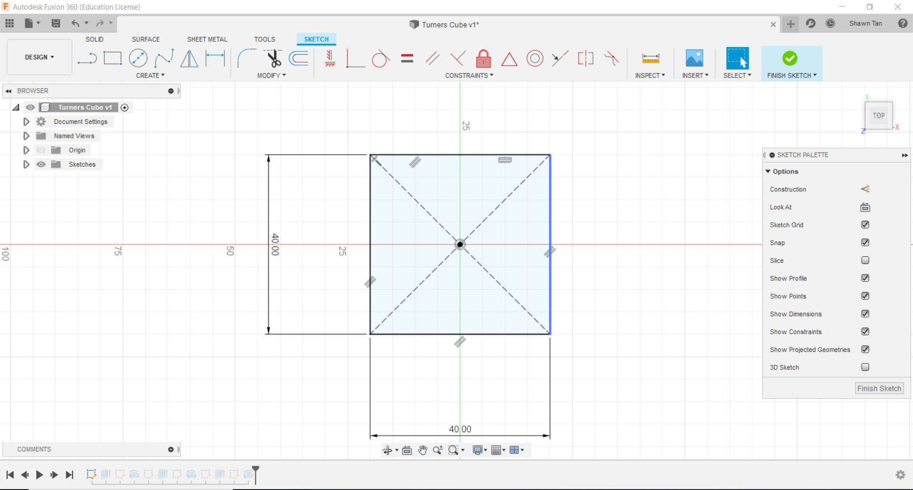
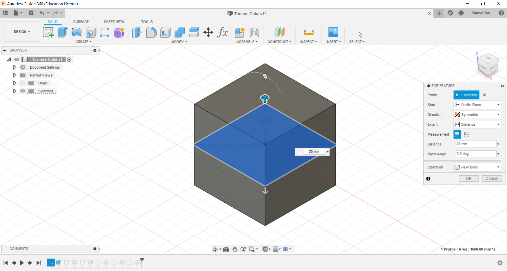
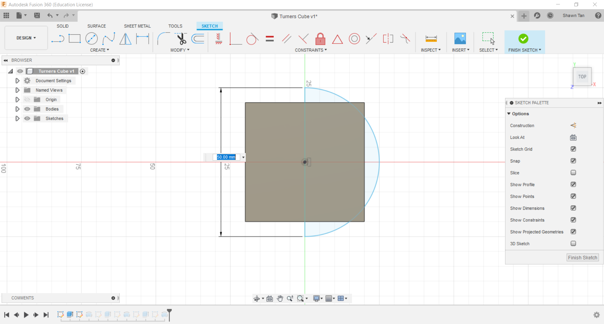
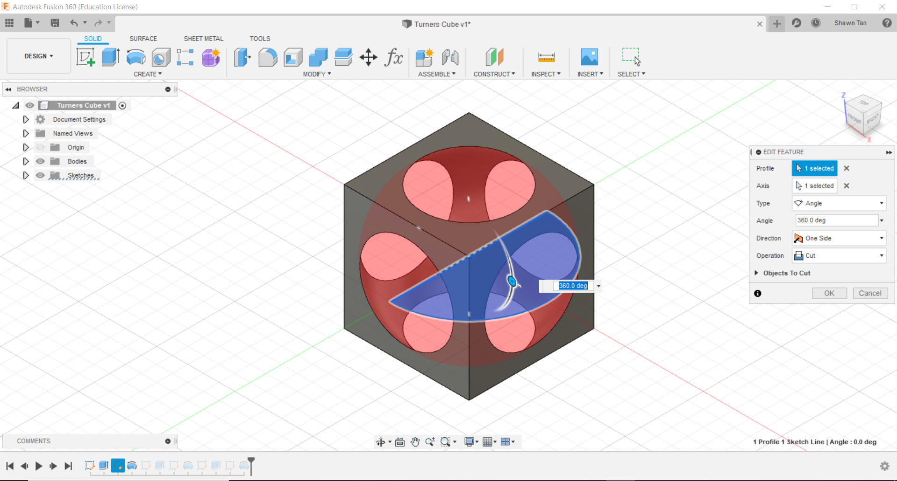
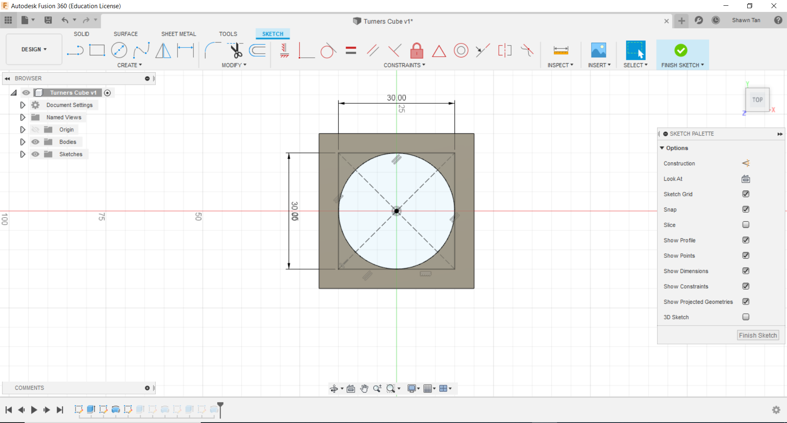
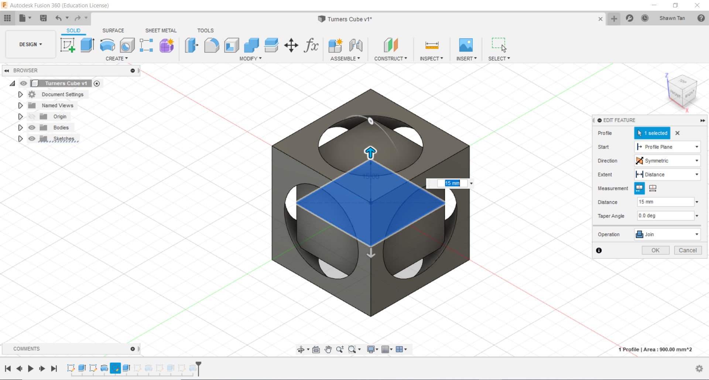
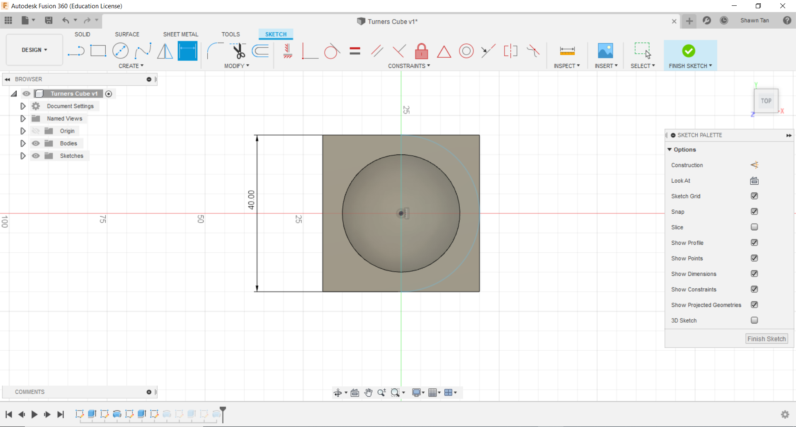
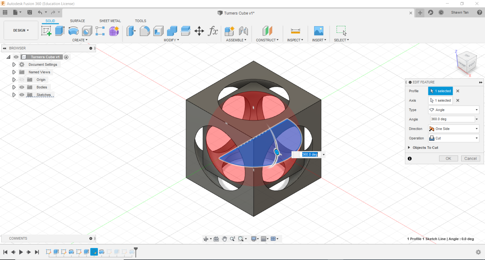
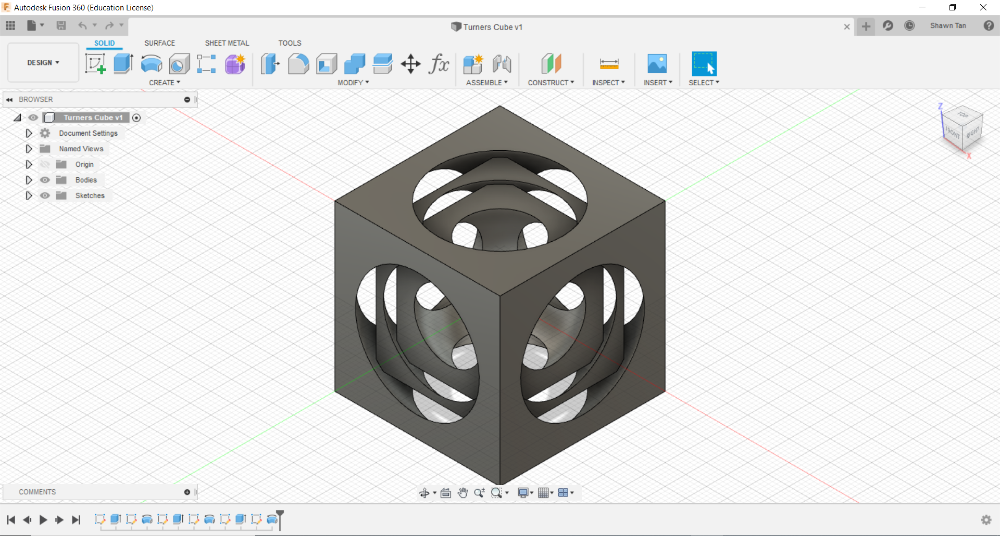

Fusion 360 Practice
Turners Cube
At the end of lesson I decided to mess around with Fusion 360, so I tried making this thing that Mr Chew mentioned before, a Turners Cube.
I first started with a sketch on the XY plane. I used a centre rectangle of 40mm by 40mm. I used the centre rectangle because I intend to use the origin planes to make the other bodies.
I then did a symmetric extrusion of 20mm in each direction, creating a 40mm cube
Afterwards, I made a circle of diameter 50mm. I trimmed of half the circle and added a 50mm line across it.
I then used this profile and did a revolve cut.
Now I repeated the same thing I did with the centre point rectangle, but this time I used a 30mm dimension
I then did a symmetric extrusion of 15mm
I then did the same thing with a 40mm diameter circle...
...and revoled cut it.
I continued doing the same thing with a 25mm cube and a 30mm diameter sphere until I got this.